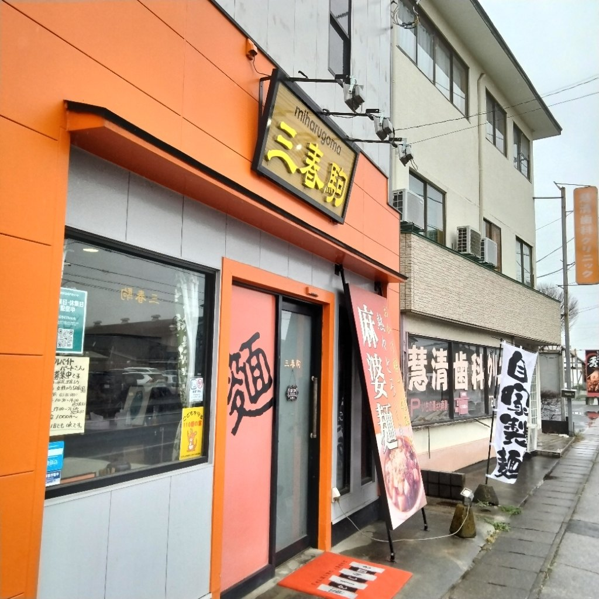
名物のレバニラは、水曜日の夜・土曜日の夜・日曜日にご用意しております。
月曜日・火曜日は、仕入れによりご用意できる日もございます。お電話でお確かめください。
木曜日・金曜日は定休日をいただいております。
売り切れ次第、終了とさせていただいております。お越しの前に、お電話でお確かめいただけますと確実です。
0280-48-3007レバニラの確認・ご予約お問い合わせは、営業日にお願いいたします。
創業昭和45年・自家製の平打ち麺の中華料理店｜昼11:30〜14:00・夜17:30〜21:00｜木・金定休
日により営業時間が変わることがございます。恐れ入りますが、お越しの前にお電話でご確認いただけますと幸いです。
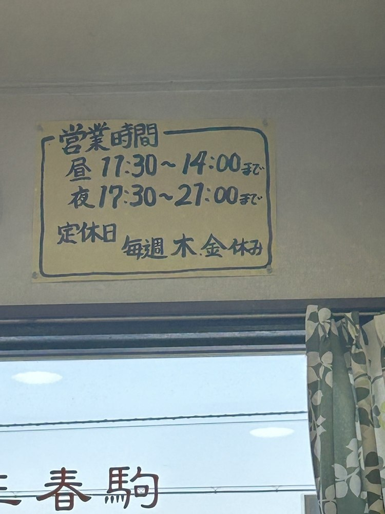
分厚く切ったレバーと、たっぷりのニラを、甘辛いタレで炒めてお出ししております。仕入れの都合で、毎日はご用意できません。
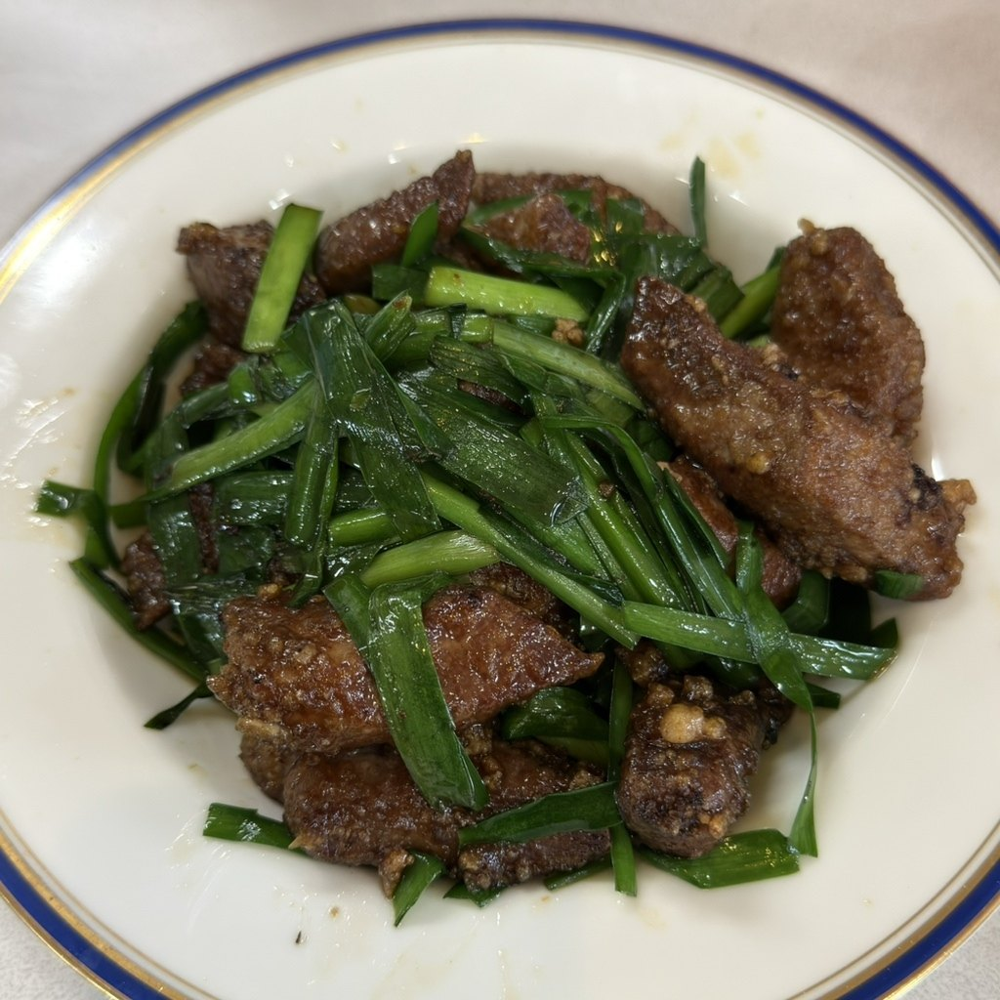
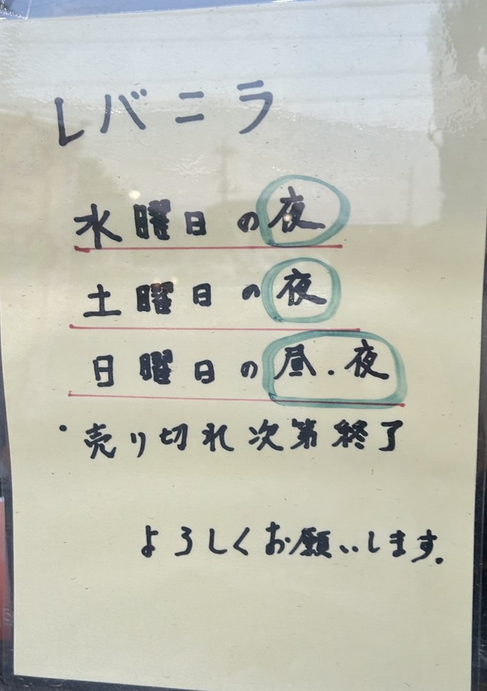
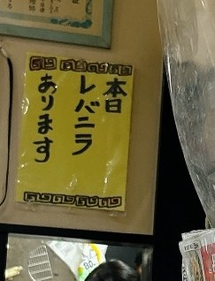
| 曜日 | レバニラ |
|---|---|
| 日曜日 | 昼・夜ともにご用意しております |
| 月曜日 | ご用意がございません |
| 火曜日 | ご用意がございません |
| 水曜日 | 夜にご用意しております |
| 木曜日 | 定休日をいただいております |
| 金曜日 | 定休日をいただいております |
| 土曜日 | 夜にご用意しております |
売り切れ次第、終了とさせていただいております。ご来店の前に、お電話でご確認いただけますと確実です。
麺は、店で打っております。幅のある平打ちの生地は、ちゃんぽんや麻婆ラーメン、広東メンにお使いしております。昭和45年の創業から、変わらず続けてまいりました。
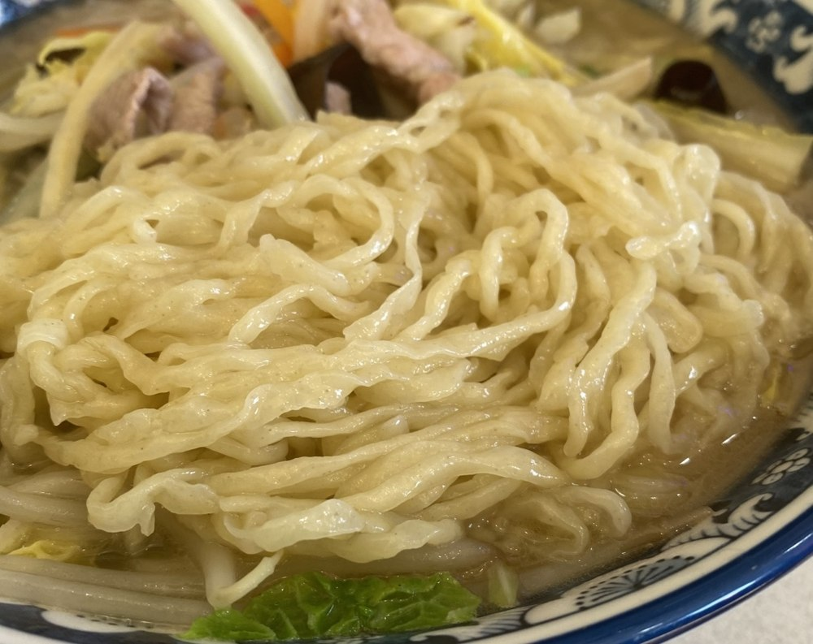
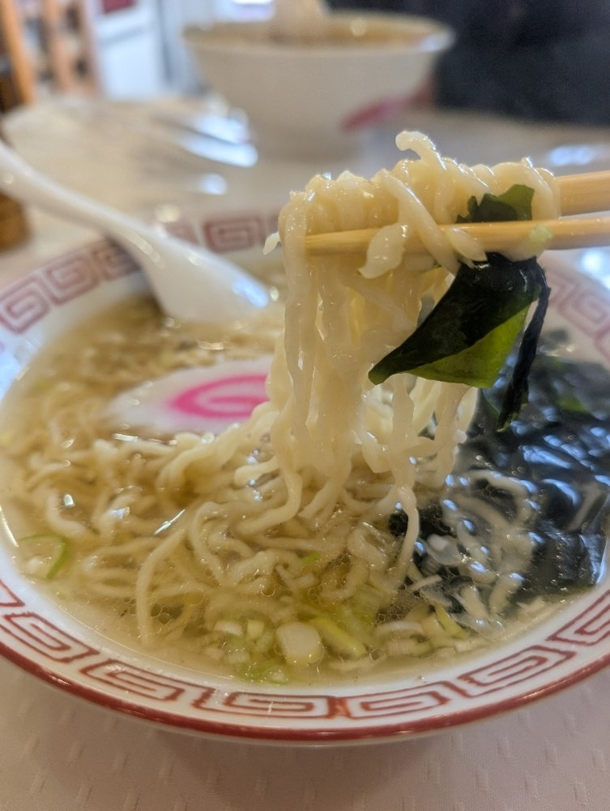
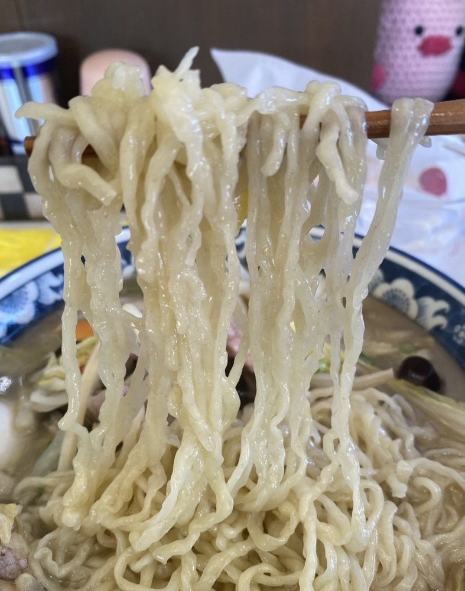
入口に「本日レバニラあります」の貼り紙が！（中略）そして私の注文でレバニラ終了、なんともラッキーでした
2026年7月ご来店のお客様の声より
レバニラのレバーが一切れ一切れが分厚い上に弾けそうな弾力があって、こんなレバーは初めてです。しかもニラもシャキシャキと歯応えがあり新鮮さがハンパない。
2025年4月ご来店のお客様の声より
以前から店前を通って自家製麺 ちゃんぽんの看板が気になってたお店です。自家製麺は佐野ラーメンの様な平打ちの麺で喉越し良くまいうー
2025年1月ご来店のお客様の声より
テーブル席のほか、奥に小上がりのお席もご用意しております。カウンター席もございますので、お一人でのご来店も歓迎いたしております。
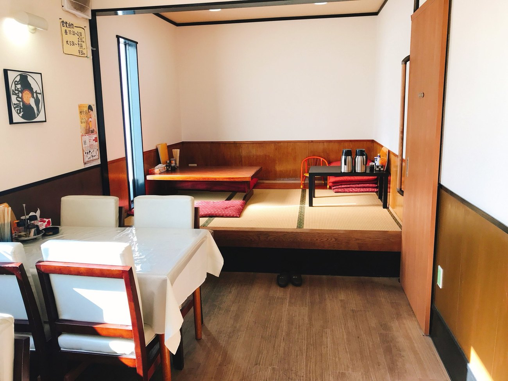
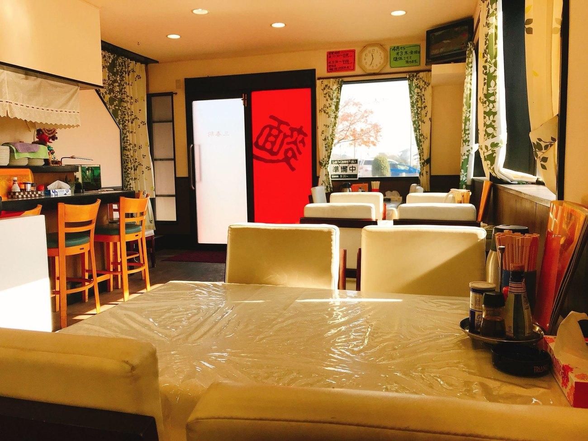
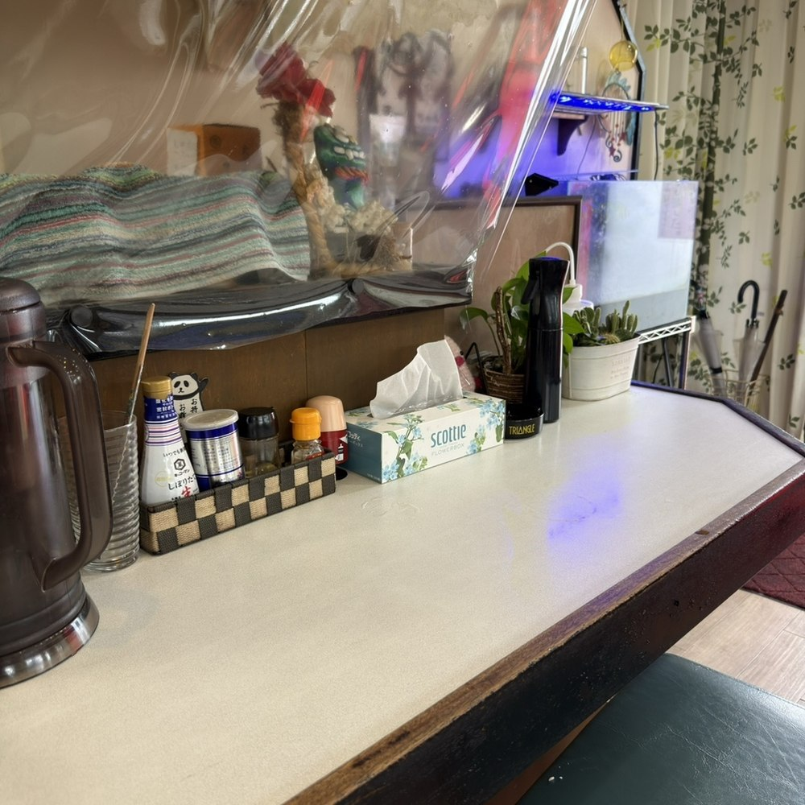
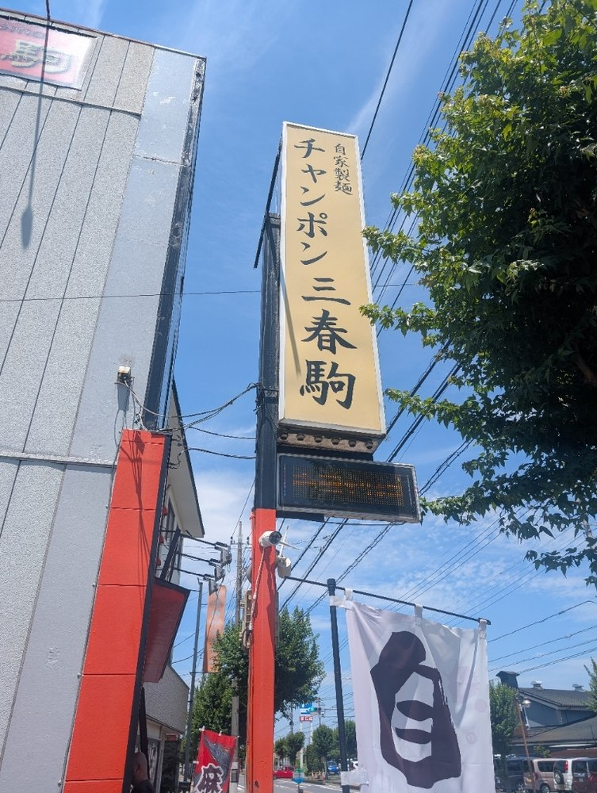
| 住所 | 〒306-0056 茨城県古河市坂間183-1 |
|---|---|
| 目印 | スーパー銭湯「いちの湯 古河店」の向かいでございます。駐車場は店の横にございます。 |
| 電話 | 0280-48-3007 |
| 営業時間 | 昼 11:30〜14:00（L.O. 13:30） 夜 17:30〜21:00（L.O. 20:00ごろ） |
| 定休日 | 木曜日・金曜日 |
| 駐車場 | あり（店の隣） |
| お支払い | 現金のみ |